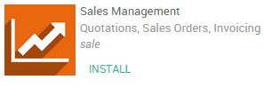
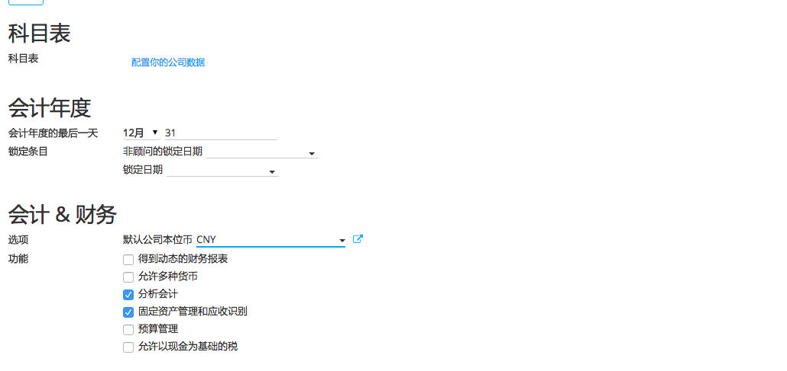
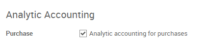
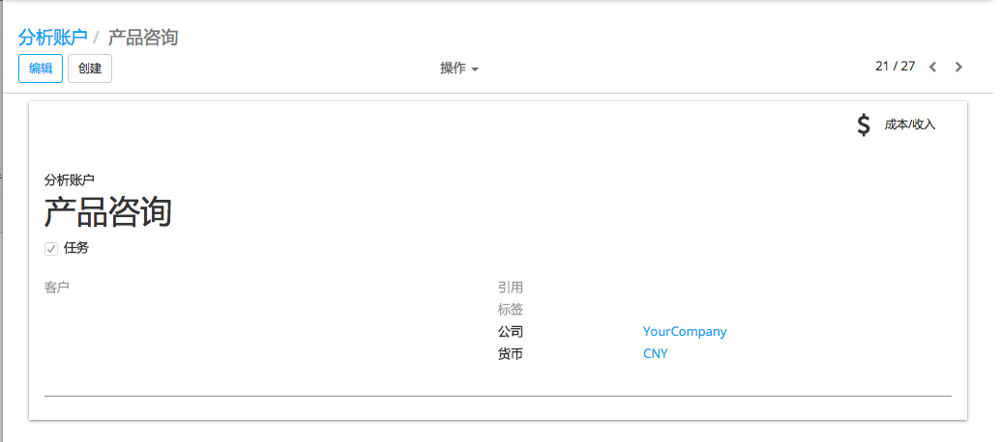
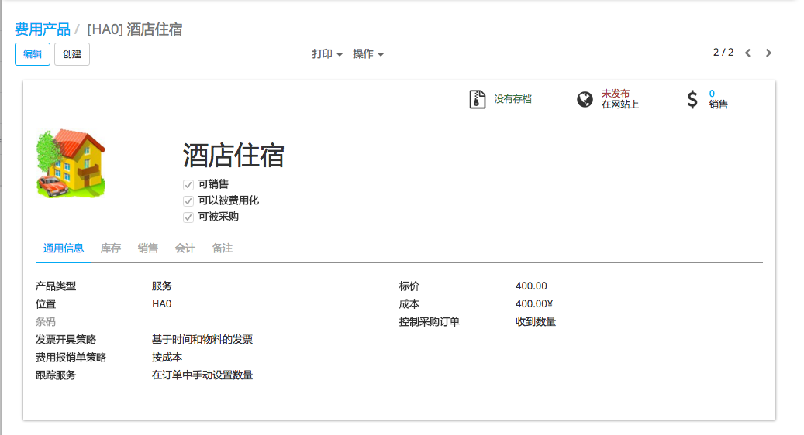
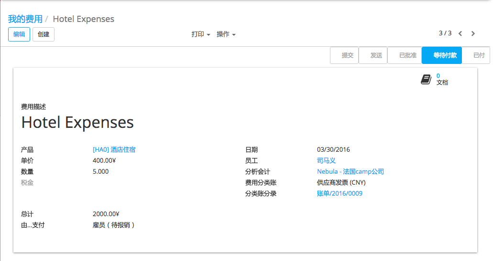
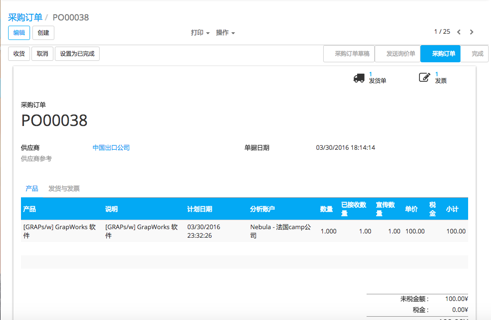
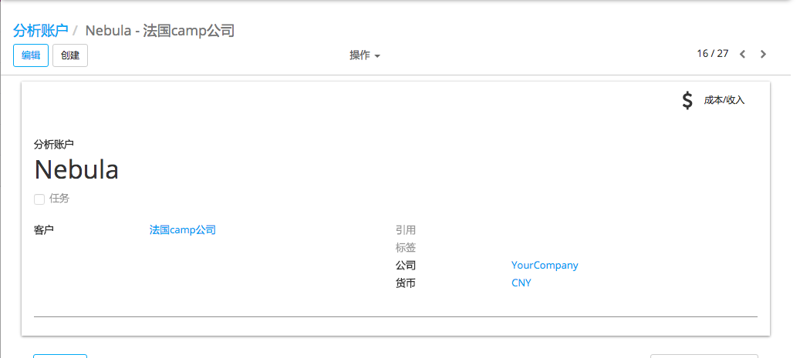

概述
多亏分析会计, 我们可以跟踪采购成本,费用和分包的会计模块。
我们将使用以下的例子。我们售了套咨询方案给客户。方案包容了所有, 意思是没有额外成本。我们不过想遵循需要被附加到这个交易的成本, 例如采购,费用,和分包成本。
配置
下面的模块需要安装跟踪成本。进入应用程序模块和安装以下程序:
 |  | |
|---|---|---|
请注意,这些应用程序提供的程序只允许我们* 记录 成本。我们无法向我们的客户自动重新发票。跟踪和 将成本再开票 [UNKNOWN NODE problematic], 你应该安装销售管理应用程序。
关于使用分析账户, 您可以参考以下文档: doc:[UNKNOWN NODE title_reference]
启用分析会计
下一步是启动分析会计。在会计软件,选择:menuselection:[UNKNOWN NODE title_reference] , 选择分析会计。
此外,向下滚动,点击 Analytic accounting for purchases 选项框。
不要忘了保存
创建分析账户
首先, 你应该创建一个分析科目用来记录所有的费用。输入会计应用程序,选择 . 创建一个新的。在这种情况下, 我们将称之为“咨询包”, 为我们的客户Smith&Co所创建。
我们将在这个科目记录所有的成本, 以便跟踪。
费用记录
我们先登记一个费用。我们的IT技术人员乘火车去看我们的客户。他自己支付机票。
创建一个费用产品
我们首先需要创建一个费用性产品。进入* 费用 模块,点击:menuselection:`Configuration --> Expense Products`. 创建一个新产品, 名为火车票, 设置成本价格为15.50欧元。确保**Can be expensed* 已勾选。
费用记账
进入费用模块,点击 . 选择火车票产品, 将其链接之前讨论过的科目上。
向经理提交,等待经理批准, 和凭证过账.
创建链接到分析账户的采购订单
采购产品
我们还需要为我们的客户买一个软件。在购买应用程序中, 创建一个软件产品的购买订单。(请参考以下文档:doc:[UNKNOWN NODE title_reference]). 在产品行上, 我们可以将成本链接到分析科目上。指定订单行, 选择正确的分析科目。确认销售。
收货并登记发票。发票一旦进入成本价格(* 供应商价格 [UNKNOWN NODE problematic]字段)同时将记录在分析科目上。
外包
采购模块可以使用相同的方式, 就如之前的分包处理。如果我们从另一家公司购买服务, 我们可以重新开票到正确的分析科目, 通过链接采购行。我们只是需要创建正确的供应商的产品。
关于分包的更多信息, 请参考以下文档:doc:[UNKNOWN NODE title_reference]
注解
你也可以跟踪成本和工时表,请参阅: 如何追踪使用能够记工单的人资？
跟踪成本
现在一切都是入账并指到分析账户。只是打开它检查科目的相关成本。
进入会计模块,点击 .
选择“咨询包-史密斯”, 单击成本和销售按钮, 以此来查看这个科目下的所有的成本。
注解
收入的话, 在发票菜单下开具'咨询包'的发票, 将发票行链接到分析科目。